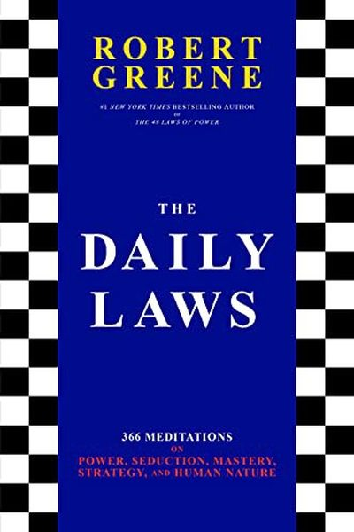

Library › Power & Strategy
The Daily Laws — Summary & Key Lessons

366 meditations on power, seduction, mastery and strategy — one law a day, from Robert Greene's entire library.
📖 OPEN THE FULL INTERACTIVE BREAKDOWN →🌐 Read it in Hindi, Hinglish, Gujarati, Tamil & 22 more languages — free, with audio.
💡 The Big Idea
The Daily Laws distills Greene's entire body of work — The 48 Laws of Power, The Art of Seduction, Mastery, The Laws of Human Nature, The 50th Law — into 366 daily meditations, each with a lesson, a historical example, and a 'Daily Law' to apply. Greene's point: wisdom is not absorbed in one sitting; it must be practiced like a physical discipline, one day at a time, until strategic thinking becomes second nature.
🧠 The 6 Key Lessons
Lesson 1: One Law a Day Beats One Book a Year
The Practice
Greene's premise is behavioral: reading 48 laws in a week changes nothing because nothing sticks. Reading one law, reflecting on it, and applying it for a day changes everything — repetition is how humans actually learn. The daily dose turns strategy from information into instinct.
📖 Example: Greene compares the book to a gym program: you don't get fit by watching someone else lift once. The readers who report transformation are the ones who treat each entry as a daily exercise — not a page to skim. Read the full example →
⚡ Do this: Start a daily 'law log': one entry per day, one line on how you applied or spotted it in the wild. Thirty days of entries beats three books on a shelf.
Lesson 2: Time Is Your Greatest Weapon
Mastery & Time
Across Greene's work runs one obsession: time. Masters think in decades; the impatient are permanently outmaneuvered. The Daily Laws repeatedly push the same habit — invest time in skills, relationships and reputation, because time is the only resource that compounds without your attention to the daily grind.
📖 Example: Greene's favorite example: Leonardo da Vinci spent 12 years on the Mona Lisa's lips — not laziness but a master's relationship with time. The impatient amateur rushes to done; the master lets time work. Read the full example →
⚡ Do this: Start one long-term investment this month (a skill, a project, a relationship) with a 5-year horizon. Check it monthly, not daily.
Lesson 3: Self-Knowledge Before Strategy
The Human Nature Lens
Greene's Laws of Human Nature argues you cannot read others until you read yourself: your own biases, your emotional triggers, your patterns of self-sabotage. The Daily Laws make this a daily habit — checking your own moods and motives before analyzing anyone else's. Strategy starts with the strategist.
📖 Example: Greene points to leaders who lost everything not through bad strategy but through unexamined emotion — Napoleon's pride at Waterloo, Caesar's vanity before the Ides of March. Both were brilliant readers of others who failed to read themselves. Read the full example →
⚡ Do this: Keep a short daily 'self-read': one line on what mood you're in and how it might distort today's decisions. Review your last 3 decisions through that lens.
Lesson 4: The Mundane Is the Master's Arena
The Daily Grind
Greene's Mastery dismantles the myth of sudden genius: every master you admire did decades of boring, repetitive practice — the mundane work that no one claps for. The Daily Laws reframes the grind: the ordinary, unglamorous, repeated actions ARE the path. Routine is not the enemy of greatness; it is greatness's address.
📖 Example: Greene recounts how Mozart, touted as a prodigy, had composed for 15 years before his first masterpiece — and how the great violinists' daily scales outnumber their concert hours a hundred to one. Read the full example →
⚡ Do this: Choose one mundane skill task (scales, drafts, reps, practice problems) and do it daily for 21 days without judging the progress. Note what quietly compounds.
Lesson 5: Be the Author of Your Life
The Final Law
Greene's closing message across all his books: stop playing the victim of circumstance. The powerful accept reality — including their own weaknesses and bad luck — and then write their own response. Circumstance is the hand you're dealt; authorship is how you play it. That internal shift, repeated daily, is the difference between drift and destiny.
📖 Example: The 50th Law's hero, 50 Cent, was shot nine times and turned the story into an empire; Greene contrasts him with those who inherit a bad start and spend life narrating it as an excuse. Read the full example →
⚡ Do this: Write the first line of your life's next chapter tonight: 'Despite ___, I will ___.' Read it every morning for a week.
Lesson 6: Mastery Requires Loving the Repetition
September: The Law of Mastery
Greene's daily-law philosophy: masters are not people of exotic talent but of sustained, focused repetition — the same skills practiced for years until they become second nature. The master's seeming ease is the residue of countless unseen reps. Loving the process, not just the result, is what sustains the thousands of hours.
📖 Example: Michelangelo reportedly sketched daily his entire life; da Vinci filled notebooks with the same fundamentals. Their masterpieces were built from accumulated routine, not isolated flashes of inspiration — the daily practice was the actual artwork. Read the full example →
⚡ Do this: Commit to one skill for one year, practicing daily in focused blocks, and track your streaks.
✅ 5-Step Action Plan
- Start a daily law log — one line per day, 30 days straight.
- Begin one 5-year investment this month and check it monthly.
- Keep a daily self-read: name the mood that could distort today.
- Pick one mundane skill task and do it daily for 21 days.
- Write your 'despite, I will' sentence and read it every morning.
⚠️ When This Doesn't Work
Holiday's 366 daily Stoic lessons are the best consistency practice in self-help — and the French Panama Canal is the warning about consistency without correction: the French spent a decade applying relentless daily effort to building a sea-level canal — the same disciplined approach that had won Suez — and the daily effort compounded into a $287 million disaster, because the daily practice never re-examined the fatal assumption (the mountains, the mud, the malaria). Consistency is a multiplier; it multiplies whatever direction you're pointed in. Daily laws need a monthly audit.
💀 The Graveyard Proves It
⛏️ The French Panama Canal — 22,000 Dead, 800,000 Investors Ruined, One Man's Certainty. Burn: 1.4 billion francs; 22,000 lives. Read the full case study →
💬 Best Quotes from The Daily Laws
- “Time is the greatest asset you possess — and the one thing you can never get back.”
- “The key to power is the daily practice of self-mastery.”
- “You are the author of your own life — never let circumstance write the plot.”
Interactive version: mark lessons as read, listen in your language, share quote cards.